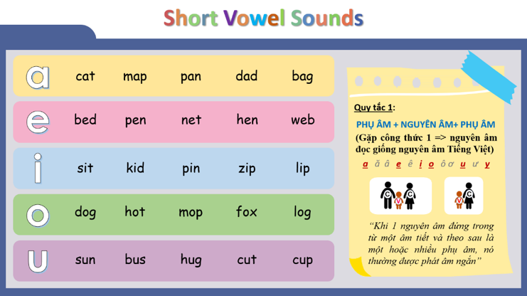

📘 TỔNG QUAN PHÁT ÂM TIẾNG ANH
🅰️ A. BẢNG CHỮ CÁI TIẾNG ANH
Từ ngữ trong tiếng Anh cũng giống như tiếng Việt, đều được cấu tạo từ hai thành phần chính:
- Nguyên âm (vowel)
- Phụ âm (consonant)
5 nguyên âm: A, E, I, O, U
21 phụ âm: các chữ cái còn lại.
Ví dụ: What's your name? – My name is LOAN. Can you spell your name? – It's L-O-A-N.
Biết tên chữ cái giúp đánh vần; biết âm chữ cái giúp đọc đúng từ. Phonics giúp học phát âm từ gốc.
🔤 PHỤ ÂM TRONG TIẾNG ANH
| Chữ cái | Ví dụ (nhấn để nghe & ghi âm) |
|---|---|
| b, bb | 🔊 big🔊 rubber |
| d, dd | 🔊 dog🔊 daddy |
| f, ph | 🔊 fan🔊 photo |
| g, gg | 🔊 go🔊 egg |
| h | 🔊 hat🔊 home |
| j, ge | 🔊 jam🔊 giraffe |
| k,c,ck | 🔊 cat🔊 kite🔊 back |
| l,ll | 🔊 love🔊 live |
| m,mm | 🔊 man🔊 summer |
| n,nn | 🔊 no🔊 dinner |
| p,pp | 🔊 pen🔊 apple |
| r,rr | 🔊 red🔊 carrot |
| s,ss | 🔊 sun🔊 dress |
| t,tt | 🔊 top🔊 butter |
| v | 🔊 van🔊 love |
| w,wh | 🔊 win🔊 water🔊 what |
| y | 🔊 yes🔊 yellow |
| z,s | 🔊 zoo🔊 nose |
| ch | 🔊 chicken🔊 chair |
| sh | 🔊 she🔊 shoe |
| ng | 🔊 sing🔊 king |
⭐ CÁC PHỤ ÂM ĐẶC BIỆT TRONG TIẾNG ANH
Ngoài các âm quen thuộc, tiếng Anh còn có một số quy tắc phát âm đặc biệt. Hãy ghi nhớ các quy tắc dưới đây và nhấn vào từng từ để nghe cách phát âm.
| Tổ hợp | Quy tắc | Ví dụ | Ghi nhớ |
|---|---|---|---|
| Hard C | C + a, o, u → /k/ | 🔊 cat🔊 cup🔊 car | C đi với a, o, u đọc là /k/. |
| Soft C | C + e, i, y → /s/ | 🔊 city🔊 pencil🔊 ice🔊 voice | C đi với e, i, y đọc như âm /s/. |
| Hard G | G + a, o, u → /g/ | 🔊 go🔊 game🔊 garden | G đi với a, o, u đọc là /g/. |
| Soft G | G + e, i, y → /dʒ/ | 🔊 giant🔊 gym🔊 gentle | G đi với e, i, y đọc như âm /dʒ/. |
| PH | PH → /f/ | 🔊 phone🔊 photo🔊 elephant | PH luôn phát âm như F. |
| TH (voiceless) | /θ/ | 🔊 think🔊 thank🔊 thin | Cắn nhẹ đầu lưỡi và thổi hơi. |
| TH (voiced) | /ð/ | 🔊 this🔊 that🔊 mother | Đầu lưỡi giữa răng, cổ họng rung nhẹ. |
| KN | K câm | 🔊 know🔊 knife🔊 knee | Không đọc K. |
| GN | G câm | 🔊 sign | Không đọc G. |
| WR | W câm | 🔊 write🔊 wrong🔊 wrist | Không đọc W. |
| WH | Đọc /w/ | 🔊 what🔊 where🔊 why | Tròn môi khi phát âm. |
| Ngoại lệ | WH → H | 🔊 who | Who đọc /huː/, không đọc /w/. |
🎧 Luyện Tập Phát Âm
Nhấn vào nút 🔊 để nghe câu mẫu bằng giọng nữ tiếng Anh.
| Chủ điểm | Câu luyện tập | Nghe |
|---|---|---|
| Hard C vs Soft C | The cat is in the city. | |
| Hard G vs Soft G | The gentlemen like to go to the gym. | |
| PH vs F | Find your phone and take a photo. | |
| TH | Think before you say this. | |
| KN / GN / WR | I know how to write a sign. | |
| WH | What do you want and where is it? |
🔠 NGUYÊN ÂM VÀ QUY TẮC ÂM NGẮN
1️⃣ PHÂN BIỆT 5 NGUYÊN ÂM TRONG TIẾNG ANH
Trong tiếng Anh có 5 nguyên âm (A, E, I, O, U). Mỗi nguyên âm có tên chữ cái (Letter Name) và âm phát âm (Sound). Khi mới học Phonics, học sinh cần phân biệt rõ hai khái niệm này.
| Chữ cái | Tên chữ (Letter Name) | Âm ngắn | Cách đọc đơn giản | Ví dụ |
|---|---|---|---|---|
| A | "ây" | /æ/ | Giống âm a trong cat | 🔊 cat🔊 apple |
| E | "i" | /e/ | Giống âm e trong pen | 🔊 pen🔊 bed |
| I | "ai" | /ɪ/ | Giống âm i trong sit | 🔊 sit🔊 fish |
| O | "âu" | /ɒ/ | Giống âm o trong hot | 🔊 hot🔊 dog |
| U | "ju" hoặc "u" | /ʌ/ | Giống âm â trong sun | 🔊 sun🔊 bus |
2️⃣ QUY TẮC 1 – ÂM NGẮN (Short Vowel Sound)
📖 Quy tắc:

Hình minh họa Quy tắc Âm ngắn (Short Vowel Rule)
| Nguyên âm | Ví dụ | Nghe |
|---|---|---|
| /æ/ | cat • map • pan • dad • bag | |
| /e/ | bed • pen • net • hen • web | |
| /ɪ/ | sit • kid • pin • zip • lip | |
| /ɒ/ | hot • dog • mop • fox • log | |
| /ʌ/ | sun • bus • hug • cut • cup |
🎤 Speaking Practice 1
❓ What do you usually do in your free time?
In my spare time, I get a pen and draw a big landscape.
Tôi thường dùng cây bút bi vẽ một bức tranh phong cảnh rộng lớn vào thời gian rảnh.
🎤 Speaking Practice 2
❓ What do you usually do in your free time?
During my time off, I often jog with my dog in the park, and I sit on a rock to rest.
Vào thời gian rảnh của mình, tôi thường chạy bộ với chú chó của tôi trong công viên và ngồi nghỉ ngơi trên đá.
🎤 Speaking Practice 3
❓ What do you usually do in your free time?
In my leisure time, I often shop for fun, and I pick the things I like.
Tôi thường đi mua sắm để giải trí và chọn mua những món tôi thích .